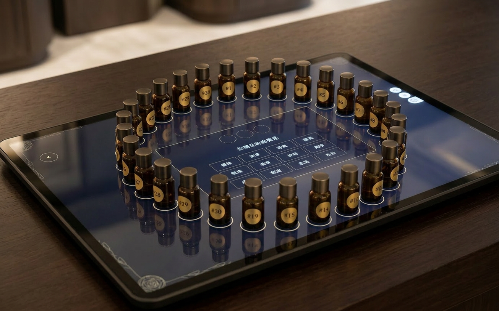
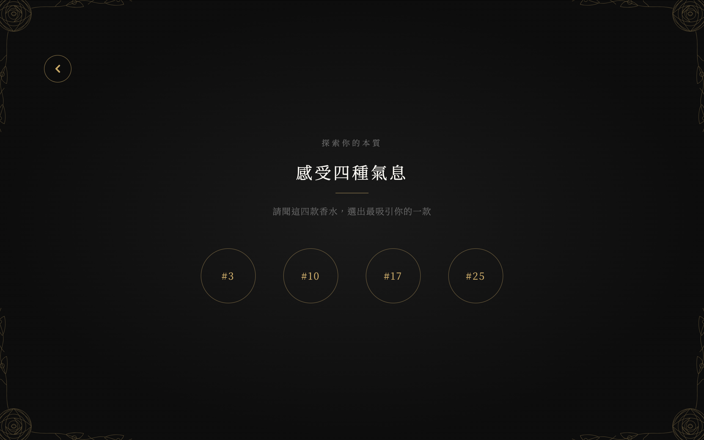
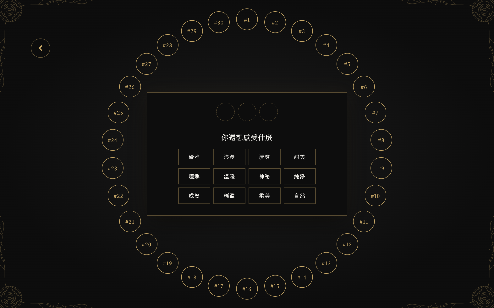
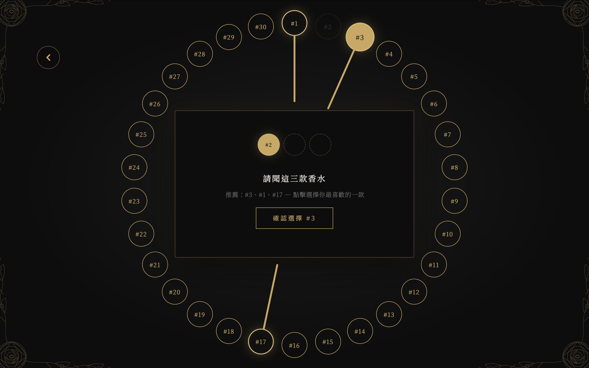
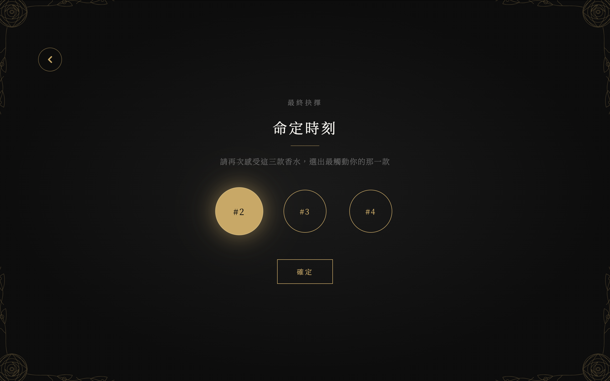
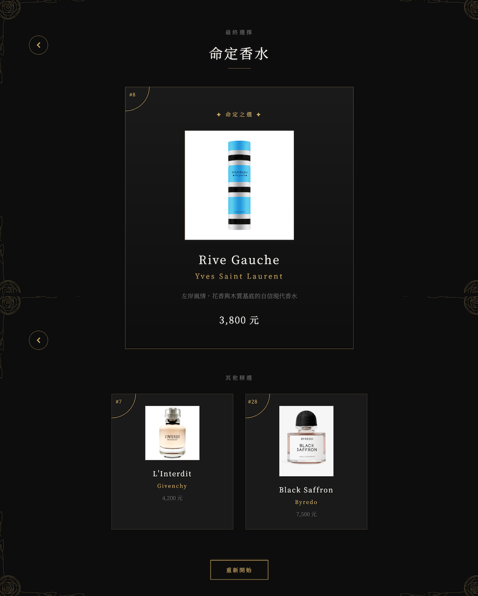

<!DOCTYPE html>
<html lang="zh-TW">
<head>
  <meta charset="UTF-8">
  <meta name="viewport" content="width=device-width, initial-scale=1.0">
  <title>試香系統開發手札</title>
  <script src="https://cdn.tailwindcss.com"></script>
  <script>
    tailwind.config = {
      theme: {
        extend: {
          fontFamily: {
            'serif-zh': ['"Noto Serif TC"', 'serif'],
            'sans-zh': ['"Noto Sans TC"', 'system-ui', 'sans-serif'],
            'inter': ['Inter', 'system-ui', 'sans-serif'],
            'mincho': ['"Shippori Mincho"', '"Noto Serif TC"', 'serif'],
          },
          animation: {
            'fade-in': 'fadeIn 1s ease-in-out',
            'slide-up': 'slideUp 0.8s ease-out',
            'float': 'float 3s ease-in-out infinite',
          }
        }
      }
    }
  </script>
  <style>
    @import url('https://fonts.googleapis.com/css2?family=Inter:wght@400;500;600;700;800;900&family=Noto+Sans+TC:wght@300;400;500;600&family=Noto+Serif+TC:wght@400;500;600;700&family=Shippori+Mincho:wght@500;600;700;800&display=swap');

    @keyframes fadeIn {
      from { opacity: 0; transform: translateY(20px); }
      to { opacity: 1; transform: translateY(0); }
    }

    @keyframes slideUp {
      from { opacity: 0; transform: translateY(50px); }
      to { opacity: 1; transform: translateY(0); }
    }

    @keyframes float {
      0%, 100% { transform: translateY(0px); }
      50% { transform: translateY(-8px); }
    }

    @keyframes scroll-hint-line {
      0%, 100% { opacity: 0.2; }
      50% { opacity: 0.75; }
    }

    .scroll-hint-bar {
      transform-origin: center top;
      animation: scroll-hint-line 2.2s ease-in-out infinite;
    }

    .text-shadow {
      text-shadow: 1px 1px 2px rgba(0,0,0,0.1);
    }

    /* 垂直文字：桌面直排／手機橫排；留白與段距引導視線往下讀 */
    .vertical-text {
      writing-mode: vertical-rl;
      text-orientation: mixed;
      max-height: none;
      overflow: visible;
      padding-top: 2.75rem;
      padding-bottom: 4rem;
      padding-inline: 0.35rem;
      box-sizing: border-box;
    }

    .vertical-text p {
      margin: 0;
      font-size: 1rem;
      line-height: 2.05;
      letter-spacing: 0.08em;
      color: #3d3d38;
    }

    /* 直排：每一欄之間留出「欄距」，視線沿欄向下再移向左欄 */
    .vertical-text p:not(:last-child) {
      margin-right: 1.85rem;
    }

    @media (max-width: 1023px) {
      .vertical-text {
        writing-mode: horizontal-tb;
        max-height: none;
        padding-top: 2.25rem;
        padding-bottom: 3.5rem;
        padding-inline: 0;
      }

      .vertical-text p {
        font-size: 1rem;
        line-height: 1.95;
        letter-spacing: 0.04em;
      }

      .vertical-text p:not(:last-child) {
        margin-right: 0;
        margin-bottom: 1.65rem;
      }
    }
  </style>
</head>
<body class="font-serif-zh bg-[#fafaf8] text-stone-800 antialiased overflow-x-hidden">
  <div id="app"></div>

  <script type="text/x-template" id="app-template">
    <!--
      版面規則（圖＋文區塊）：
      DOM 一律「先圖片、後文字」；小螢幕由上而下即先圖後文。
      lg 使用 flex-row-reverse，維持「左側文字、右側圖」。
      僅文字、無配圖之區塊（如宣言）不在此列。
    -->
    <div class="min-h-screen">
      <!-- ========== Fragrance 橫幅：非滿版 + 右側滾動引導 ========== -->
      <div class="w-full px-6 pt-6 pb-2 sm:px-10 lg:px-16">
        <div class="mx-auto flex max-w-6xl flex-col gap-5 sm:flex-row sm:items-end sm:gap-8 lg:gap-10">
          <div class="order-1 min-w-0 flex-1 overflow-hidden rounded-2xl shadow-sm ring-1 ring-stone-900/5">
            <div>
              
            </div>
          </div>
          <!-- 手機：圖下橫向滾動提示（接在圖後） -->
          <div class="order-2 flex flex-row items-center justify-center gap-3 py-1 sm:hidden" aria-hidden="true">
            <span class="font-sans-zh text-[10px] font-medium uppercase tracking-[0.3em] text-stone-400">Scroll</span>
            <div class="scroll-hint-bar h-px w-16 rounded-full bg-gradient-to-r from-transparent via-stone-400 to-stone-500"></div>
            <div class="text-stone-400 animate-bounce">
              <svg class="h-5 w-5" viewBox="0 0 24 24" fill="none" stroke="currentColor" stroke-width="1.5">
                <path stroke-linecap="round" stroke-linejoin="round" d="M19.5 8.25l-7.5 7.5-7.5-7.5" />
              </svg>
            </div>
          </div>
          <!-- 桌面：圖右直向滾動提示 -->
          <div
            class="order-3 hidden shrink-0 flex-col items-center self-stretch pb-2 sm:flex sm:w-14 lg:w-16"
            aria-hidden="true"
          >
            <div class="flex flex-1 flex-col items-center justify-end gap-4">
              <span class="font-sans-zh text-[10px] font-medium uppercase tracking-[0.35em] text-stone-400 [writing-mode:vertical-rl]">
                Scroll
              </span>
              <div class="scroll-hint-bar h-24 w-px rounded-full bg-gradient-to-b from-stone-500 via-stone-300 to-transparent"></div>
              <div class="flex flex-col items-center text-stone-400 animate-bounce">
                <svg class="h-5 w-5" viewBox="0 0 24 24" fill="none" stroke="currentColor" stroke-width="1.5" aria-hidden="true">
                  <path stroke-linecap="round" stroke-linejoin="round" d="M19.5 8.25l-7.5 7.5-7.5-7.5" />
                </svg>
              </div>
            </div>
          </div>
        </div>
      </div>

      <!-- ========== Hero：全裝置先圖後文；lg 用 row-reverse 維持左文右圖 ========== -->
      <div class="my-32 flex min-h-screen flex-col">
        <div class="flex min-h-0 flex-1 flex-col lg:flex-row-reverse lg:items-stretch">
          <!-- 1. 主圖 order：先圖 -->
          <div class="order-1 flex w-full flex-col justify-center px-6 pt-6 lg:w-1/2 lg:px-8 lg:pt-0 xl:px-10">
            <div class="overflow-hidden">
              <div>
                
              </div>
            </div>
          </div>
          <!-- 2. 小標 + 標題 order：後文 -->
          <div class="order-2 flex w-full flex-col justify-center px-6 py-10 lg:w-1/2 lg:justify-center lg:pl-16 lg:pr-8 lg:py-16 xl:pl-24">
            <div class="animate-fade-in text-center lg:text-left">
              <p class="text-sm leading-relaxed tracking-wide text-stone-600">
                於30款香水中，
              </p>
              <p class="text-sm leading-relaxed tracking-wide text-stone-600">
                尋找屬於你的香氣。
              </p>
            </div>
            <div class="mt-8 text-center animate-slide-up lg:mt-10 lg:text-left">
              <h1 class="font-mincho text-5xl font-semibold leading-[1.12] tracking-[0.08em] text-stone-900 lg:text-7xl xl:text-8xl">
                <span class="mb-6 block">感受多樣</span>
                <span class="block text-stone-800">香水風格</span>
              </h1>
            </div>
          </div>
        </div>

        <!-- 宣言區：僅文字（無對應圖）；lg 用左 padding 推到約 2/3 處起排 -->
        <div class="w-full shrink-0 bg-white/40 pl-10 pt-16 backdrop-blur-[2px] lg:pl-[66.666667%] lg:pr-16">
          <div class="max-w-none text-sm leading-relaxed text-stone-800 lg:max-w-md">
            <div>
              <div class="vertical-text font-serif-zh font-normal">
                <p>嗅覺是所有感官中最誠實的，卻也最容易疲憊。</p>
                <p>以「降低感官負擔」為核心出發點</p>
                <p>透過詞語聯想取代反覆試聞的傳統流程</p>
                <p>在嗅覺尚未疲勞之前</p>
                <p>用語言鎖定真正想要的氣味輪廓。</p>
              </div>
            </div>
          </div>
        </div>
      </div>

      <!-- ========== Step 區塊 ========== -->
      <div class="overflow-hidden">
        <div class="flex w-full flex-row justify-end px-10 pt-6">
          <div class="pointer-events-none h-20 w-20 shrink-0 rounded-full bg-blue-100/80 opacity-30 animate-float"></div>
        </div>

        <div class="relative z-10 flex w-full flex-col gap-32">
          <!-- Step 1：先圖後文；lg row-reverse 維持左文右圖 -->
          <div class="flex flex-col lg:flex-row-reverse">
            <div class="order-1 flex w-full flex-col justify-center lg:w-1/2">
              <div>
                
              </div>
            </div>
            <div class="order-2 flex w-full flex-col items-start justify-center p-8 font-serif-zh lg:w-1/2 lg:p-16">
              <h3 class="font-inter text-lg font-semibold tracking-wide text-stone-900">Step 1｜調性初始化</h3>
              <p class="mt-4 text-xl font-normal leading-relaxed text-stone-700">臺面上會先放置四款香水,供顧客先選擇自己偏好的香水</p>
              <p class="mt-2 text-xl font-normal leading-relaxed text-stone-700">——花香、木質、果香、動物調，共四類</p>
            </div>
          </div>

          <!-- step2：先圖後文（與 Step1 同結構） -->
          <div class="bg-white/90 backdrop-blur-sm">
            <div class="container mx-auto px-6 py-12 lg:px-16 lg:py-16">
              <div class="flex flex-col items-center gap-8 lg:flex-row-reverse lg:gap-16">
                <div class="order-1 w-full lg:w-1/2">
                  
                </div>
                <div class="order-2 w-full animate-slide-up space-y-4 font-serif-zh lg:w-1/2 lg:space-y-6">
                  <h3 class="font-inter text-lg font-semibold text-stone-900">Step 2｜三輪詞語選擇 × 動態縮焦</h3>
                  <p class="text-sm leading-relaxed text-stone-700 lg:text-base">
                    系統設計了三輪詞語互動，每輪請顧客從詞池中選出1個最有共鳴的詞。
                  </p>
                  <p class="text-sm leading-relaxed text-stone-700 lg:text-base">
                    每個詞的背後，都對應著一組預設的香水權重映射表——
                    當使用者選了「溫暖」，木質調香水加分；選了「純淨」，動物調香水加分。
                    詞語不只是形容詞，每一個詞語都是一條指向特定香水的訊號。
                  </p>
                  <p class="text-xl leading-relaxed text-stone-800">
                    系統推薦出的香水，代表它在語意上與使用者的選詞路徑重疊度最高——
                    不是隨機推薦，而是每一分都有來源可追溯。
                  </p>
                </div>
              </div>
            </div>
          </div>

          <!-- step3：先圖後文；lg row-reverse 維持左文右圖 -->
          <div class="flex flex-col lg:flex-row-reverse">
            <div class="order-1 flex w-full flex-col justify-center lg:w-1/2">
              <div>
                
              </div>
            </div>
            <div class="order-2 flex w-full flex-col justify-center items-start p-8 font-serif-zh lg:w-1/2 lg:p-16">
              <p class="text-sm leading-relaxed text-stone-700 lg:text-base">
                關鍵在於動態詞池設計：
              </p>
              <p class="mt-3 text-sm leading-relaxed text-stone-700 lg:text-base">
                第1輪：所有人看同一組詞，廣泛捕捉偏好方向
              </p>
              <p class="mt-3 text-sm font-medium leading-relaxed text-stone-700 lg:text-base">
                第2輪：根據第1輪的選詞結果，自動切換對應的詞池，進入更細緻的感受探索
              </p>
              <p class="mt-3 text-sm italic leading-relaxed text-stone-600 lg:text-base">
                第3輪：根據前兩輪累積的香水分數排名，再次切換詞池，精準區分風格相近的香水
              </p>
              <p class="mt-4 leading-relaxed text-stone-800">
                這個設計的邏輯類似決策樹（Decision Tree）——
                每一輪的選擇都會影響下一輪的選項，
                讓系統在不知不覺中，隨著使用者的回答越來越「認識」他。
              </p>
            </div>
          </div>

          <!-- step4：先圖後文 -->
          <div class="backdrop-blur-sm">
            <div class="container mx-auto px-6 py-12 lg:px-16 lg:py-16">
              <div class="flex items-center gap-8 lg:flex-row lg:gap-16">
                <div class="order-1 flex w-full flex-col justify-center lg:w-1/2">
                  
                </div>
                <div class="order-2 w-full space-y-4 font-serif-zh animate-slide-up lg:w-1/2 lg:space-y-6">
                  <h3 class="font-inter text-lg font-semibold text-stone-900">Step 3｜最終確認</h3>
                  <p class="text-xl leading-relaxed text-stone-800">
                    三輪結束後，系統會將每輪由顧客親自挑選的香水展示於畫面中
                    並請顧客最後再確認一次，選出最喜歡的香水。
                  </p>
                </div>
              </div>
            </div>
          </div>

          <!-- step5：先圖後文 -->
          <div class="backdrop-blur-sm">
            <div class="container mx-auto px-6 py-12 lg:px-16 lg:py-16">
              <div class="flex flex-col items-center gap-8 lg:flex-row-reverse lg:gap-16">
                <div class="order-1 flex w-full flex-col justify-center lg:w-1/2">
                  
                </div>
                <div class="order-2 w-full space-y-4 font-serif-zh animate-slide-up lg:w-1/2 lg:space-y-6">
                  <h3 class="font-inter text-lg font-semibold text-stone-900">Step 4｜驚喜揭曉</h3>
                  <p class="text-sm leading-relaxed text-stone-700 lg:text-base">
                    根據顧客最後選出的香水，系統會揭曉該香水的品牌、價位、香氣描述等資訊，以供顧客購買。
                  </p>
                  <p class="leading-relaxed text-stone-800">其餘兩款香水則會以較簡略的資訊展示，供顧客參考。</p>
                </div>
              </div>
            </div>
          </div>
        </div>

        <!-- CTA -->
        <div class="flex h-[10.5rem] w-full flex-col items-center justify-center bg-[#0D0D0D] px-6">
          <div class="flex flex-col items-center gap-8">
            <div class="text-center font-serif-zh">
              <span class="block text-lg font-light tracking-[0.45em] text-[#F8F6F1] md:text-xl">
                開始體驗
              </span>
            </div>
            <a
              href="index.html"
              class="flex h-14 w-14 shrink-0 items-center justify-center rounded-full border border-[#B89A67] bg-transparent text-[#B89A67] transition duration-300 hover:border-[#D4B978] hover:text-[#D4B978] hover:shadow-[0_0_24px_rgba(184,154,103,0.35)] focus-visible:outline focus-visible:outline-2 focus-visible:outline-offset-4 focus-visible:outline-[#B89A67]"
              aria-label="進入香水探索"
            >
              <svg xmlns="http://www.w3.org/2000/svg" fill="none" viewBox="0 0 24 24" stroke-width="1.25" stroke="currentColor" class="h-6 w-6" aria-hidden="true">
                <path stroke-linecap="round" stroke-linejoin="round" d="M19.5 8.25l-7.5 7.5-7.5-7.5" />
              </svg>
            </a>
          </div>
        </div>
      </div>
    </div>
  </script>

  <script src="https://unpkg.com/vue@3/dist/vue.global.js"></script>
  <script>
    const { createApp, nextTick } = Vue;

    createApp({
      mounted() {
        nextTick(() => {
          const observerOptions = {
            threshold: 0.1,
            rootMargin: '0px 0px -50px 0px'
          };
          const observer = new IntersectionObserver((entries) => {
            entries.forEach((entry) => {
              if (entry.isIntersecting) {
                entry.target.style.opacity = '1';
                entry.target.style.transform = 'translateY(0)';
              }
            });
          }, observerOptions);
          document.querySelectorAll('.animate-fade-in, .animate-slide-up').forEach((el) => {
            observer.observe(el);
          });
        });
      },
      template: document.getElementById('app-template').innerHTML
    }).mount('#app');
  </script>
</body>
</html>
